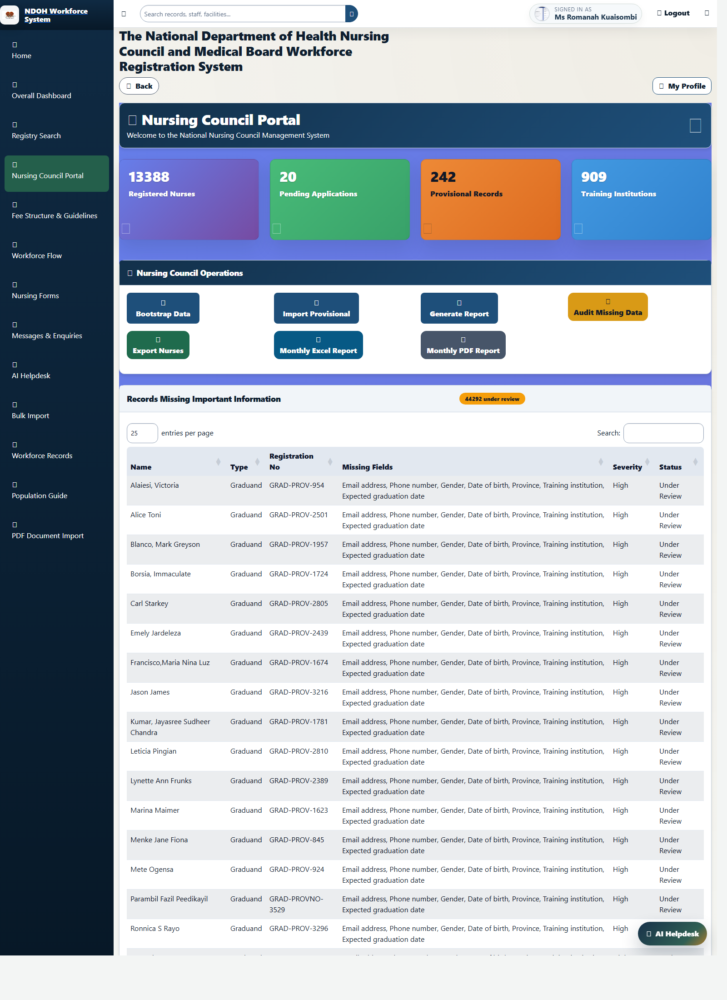
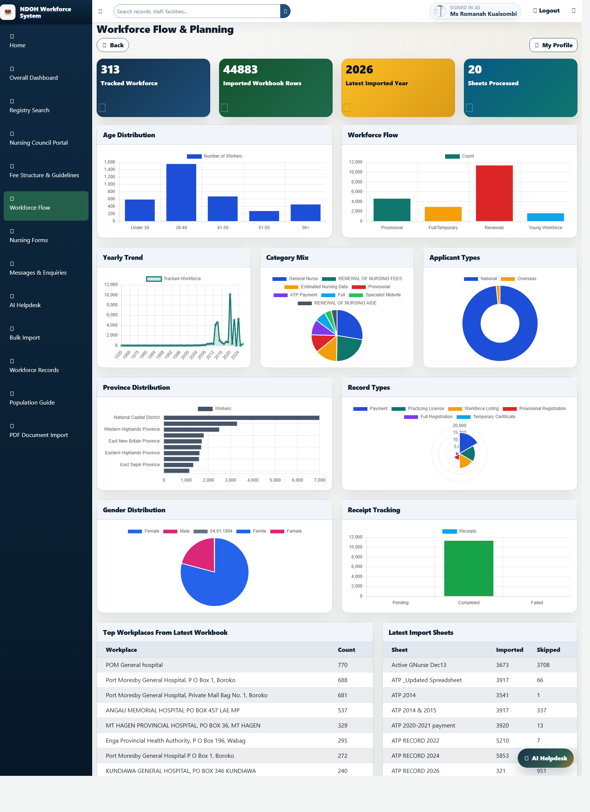
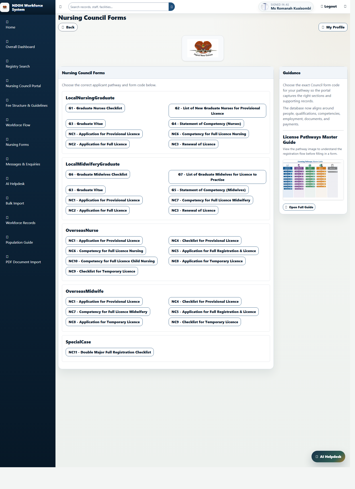
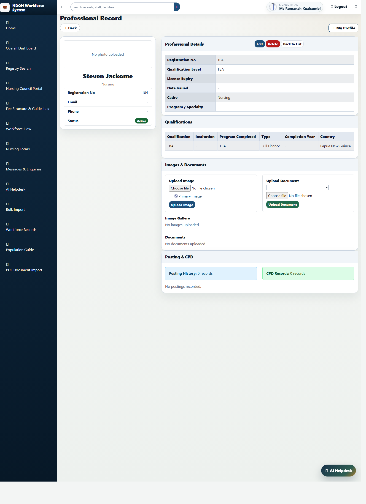

Nursing Council Workforce Registry: Simple Management Brief
This brief explains the Nursing Council side of the system in plain language for non-technical staff, managers, and executives. It describes what the system does, what each role can see, how privacy is protected, what information is captured, and what needs to improve for cleaner data from paper files into the electronic register.
Prepared from the live project on May 4, 2026. Screenshots below are examples of the current user interface.
1. What This System Is
The system is a web-based workforce registry for the National Department of Health. On the Nursing Council side, it is used to register nurses, midwives, nurse aides, and graduands, store their supporting records, track licence history, and monitor workforce numbers and trends.
In simple terms, it is both an operations tool and a record-keeping tool. It helps staff process forms, review records, attach qualifications and documents, follow up missing data, and produce management reports.
Registration and renewalProfessional recordsQualification trackingDocument storageDashboard reportingData quality review

Nursing Council dashboard: key totals, pending work, and council operations.

Workforce flow view: charts and tables showing how records move through the system over time.
2. Interface Set 1: Dashboard and Monitoring
The Nursing Council dashboard is the main working screen for registry staff. It gives a quick picture of how many nursing records exist, how many applications are still waiting, how many provisional records are active, and how many training institutions are linked to the system.
The workforce flow screen is more management-focused. It helps the office understand movement across years, provinces, and licence stages. This is important for planning, staffing, follow-up, and reporting to leadership.
Shows pending applications that need action.
Shows province and year-based distribution for nursing records.
Shows the pipeline from graduand and provisional status through to full registration and practising licence.
Supports exports and management reporting.

Nursing forms portal: guides users to the correct Nursing Council form code and pathway.

Individual professional record: identity, qualifications, images, documents, and related information.
3. Interface Set 2: Forms and Individual Records
The Nursing Forms screen is the intake side of the system. It directs users or staff to the correct form pathway, such as provisional licence, full licence, renewal, or graduate documents. This reduces the chance that the wrong form is used.
The individual professional record is the detailed file for one person. It brings together the basic profile, licence information, qualification history, attached images, supporting documents, and other related records in one place.
Supports multiple Nursing Council form families such as NC1, NC2, NC3, G1, G3, G4, G5, G6, and others.
Allows qualifications to be stored and reviewed with the rest of the person’s information.
Allows document and image upload for a more complete personnel file.
Creates a single working reference for each professional.
4. Roles, Accessibility, and Privacy
The system is role-based. This means people do not all see the same thing. What they can view depends on whether they are back-office staff, Nursing Council users, Medical Board users, or personal applicant-level users.
Role
Main Access
What They Can View
Privacy Position
Admin
Full back-office access
Both Nursing Council and Medical Board dashboards, reports, records, and staff tools
Can cross domains because this is the supervisory role
Nursing Council Registrar / staff
Nursing Council operational screens
Nursing dashboard, nursing forms, nursing records, nursing applications, nursing reports, nursing data quality work
Should not see Medical Board doctor or CHW records
Medical Board Registrar / staff
Medical Board operational screens
Medical Board dashboard, doctor and CHW records, medical forms, medical reports
Should not see Nursing Council records
Nurse / Nurse Aide / Graduand
Personal user-level portal
Their own profile, their own applications, receipt submission, and related self-service actions
Should not see other people’s records
Viewer / Reviewer
Limited or support access depending on setup
Used for controlled review or viewing tasks rather than full registrar operations
Should stay within assigned workflow only
Privacy point: the system now separates Nursing Council data from Medical Board data at dashboard level, record level, application level, export level, and staff API level. This is important because nursing records should not be visible to Medical Board users, and medical or CHW records should not be visible to Nursing Council users.
5. What The System Is Able To Capture
For the Nursing Council side, the system can capture and connect many different pieces of information for one person or application:
Personal details such as name, registration number, gender, contact details, province, and date of birth.
Professional track such as nurse, midwife, nurse aide, or graduand.
Licence details such as date issued, expiry date, provisional status, and renewal status.
Qualification records including institution, programme completed, completion year, and country.
Supporting documents such as certificates, transcripts, IDs, and other required attachments.
Photos and scanned images linked to the person’s record.
Applications by official form code and processing status such as pending, approved, or rejected.
Payment and receipt records linked to applications.
Imported historical licence and practice records from workbook data.
Data quality review flags for missing or suspicious information.
6. What The Cleansing Work Shows About Data Quality
The project already includes a serious data-cleaning layer. It normalizes names, registration numbers, provinces, institutions, dates, and historical workbook rows. It also flags missing information for follow-up.
From the existing cleansing summaries and issue files, the main problems are:
Invalid practitioner number formats.
Duplicate practitioner numbers.
Missing or invalid issued dates.
Missing graduation year.
Missing institution information.
Conflicting names sharing the same registration number.
Date values that had to be repaired because the year was clearly wrong.
Examples from the current issue files show the system is already finding records that have the same registration number but different names, missing issue dates, and incomplete qualification history. This is exactly the kind of problem that causes wrong reporting, duplicate files, and difficulty when tracing a person’s true registration history.
7. What Must Be Done For Clean Data Flow From Paper To Electronic Records
Use one standard paper intake pack. Every paper application should follow the same form version and the same document checklist.
Assign one intake number at first contact. Before data entry starts, every file should receive a unique intake or tracking number.
Scan the full paper pack early. The form, ID, certificates, receipt, and supporting documents should be scanned together before or during data entry.
Enter data into a staging area first. Raw information should first go into a review queue, not directly into the final master register.
Make critical fields mandatory. Name, registration number, institution, province, issue date, qualification, and applicant pathway should never be left blank if the record is meant to move forward.
Use lookup lists instead of free typing where possible. Provinces, institutions, cadres, document types, and pathways should come from controlled dropdowns.
Run duplicate checks before approval. The system should always compare registration number, practitioner number, name, and email before a record is accepted into the live register.
Registrar review should confirm the source document. Approval should mean someone has compared the electronic record with the scanned source.
Resolve missing data quickly. Records with missing issue dates, institutions, or qualification details should be held for follow-up instead of silently accepted.
Audit regularly. Monthly or quarterly data quality audits should become routine so errors do not build up again.
8. Practical Management Recommendations
Keep Nursing Council and Medical Board data separated by design, not just by policy.
Require a basic completeness check before any record becomes part of the official register.
Train data-entry and registrar staff on standard naming, date, and registration-number rules.
Adopt a scan-first workflow so the electronic record always has document evidence behind it.
Use the existing missing-data review tools as an operational process, not only as a one-time cleanup exercise.
9. Bottom Line
The system is already capable of doing far more than simple registration storage. It can guide users to the correct form, keep an individual’s qualifications and documents together, provide management dashboards, and protect privacy through role-based access.
The main remaining challenge is not the dashboard itself. It is the quality of raw source data. If paper intake, scanning, data entry standards, and registrar review are strengthened, the system can become a reliable national source of truth for Nursing Council records.